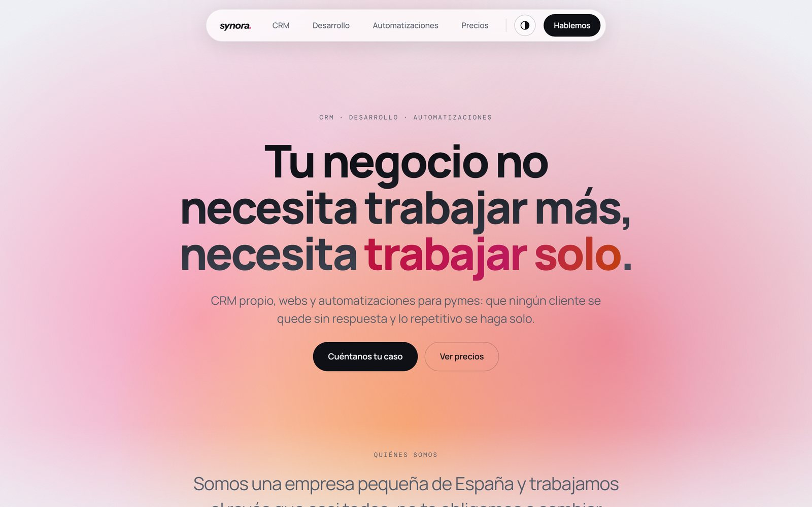
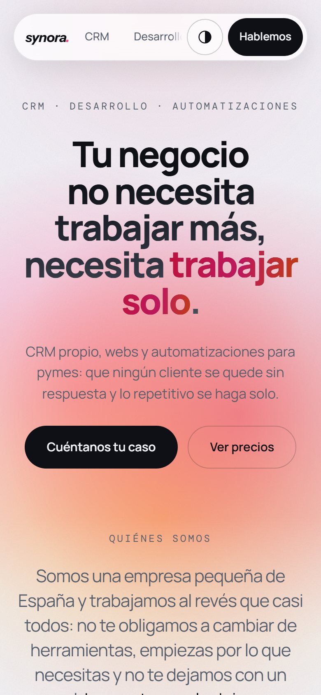

Synora
La imagen y la web de una empresa de software.
- Tipo
- En empresa
- Año
- 2026
- Qué hice
- Identidad
Web - Con
- Next.js
Synora hace CRM, webs y automatizaciones para pymes. Me encargué de su imagen: la marca y la web synora.es, para que una empresa pequeña se explicara en una sola pantalla.
Identidad
01synora.
synora.
synora.
synora.
synora.
Color
Negro#07080B
Blanco#FFFFFF
Gris#E6E7EC
Azul#336DEA
Rojo#EA335B
Tipografía
synora.Instrument Sans Bold cursivaLogo
Necesita trabajar solo.Manrope ExtraBoldTitulares
@SYNORA.SOLUTIONSDM MonoEtiquetas
Web
02Ver la websynora.es

